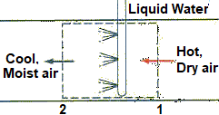

Air enters an evaporative cooler at P (kPa), T1°C and %RH1 relative humidity, and it exits at %RH2 relative humidity. Determine
A) The exit temperature of the air,
B) The lowest temperature to which the air can be cooled by this evaporative cooler.
HINT: Assume that wet-bulb temperature and enthalpy are constant.
Reference: Cengel YA, Boles MA, Kanaoglu M (2019). Thermodynamics: an engineering approach, 9th edition, McGraw-Hill Education.